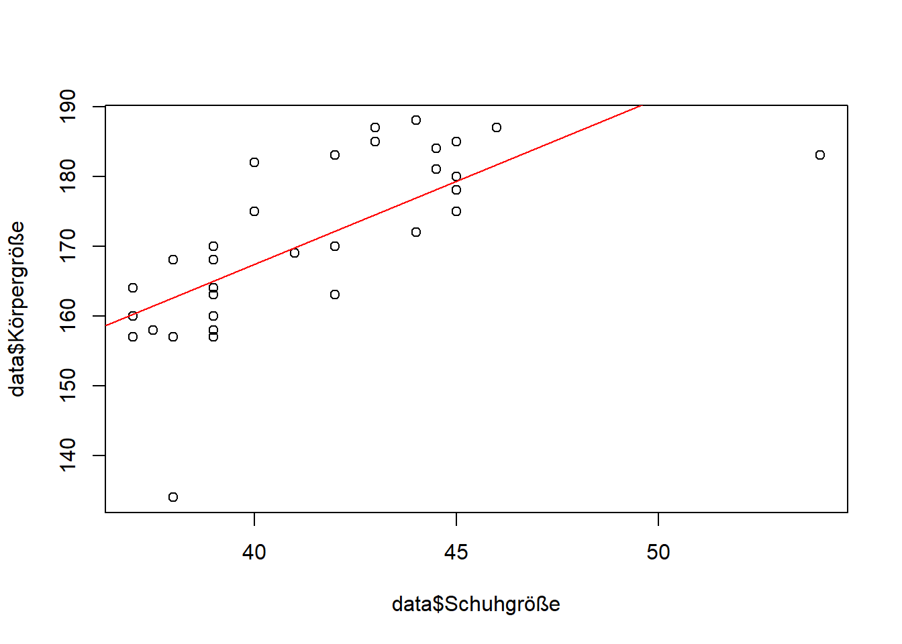
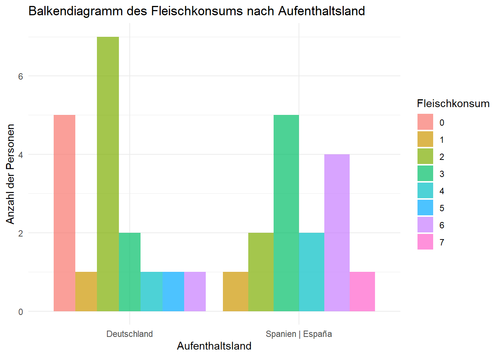
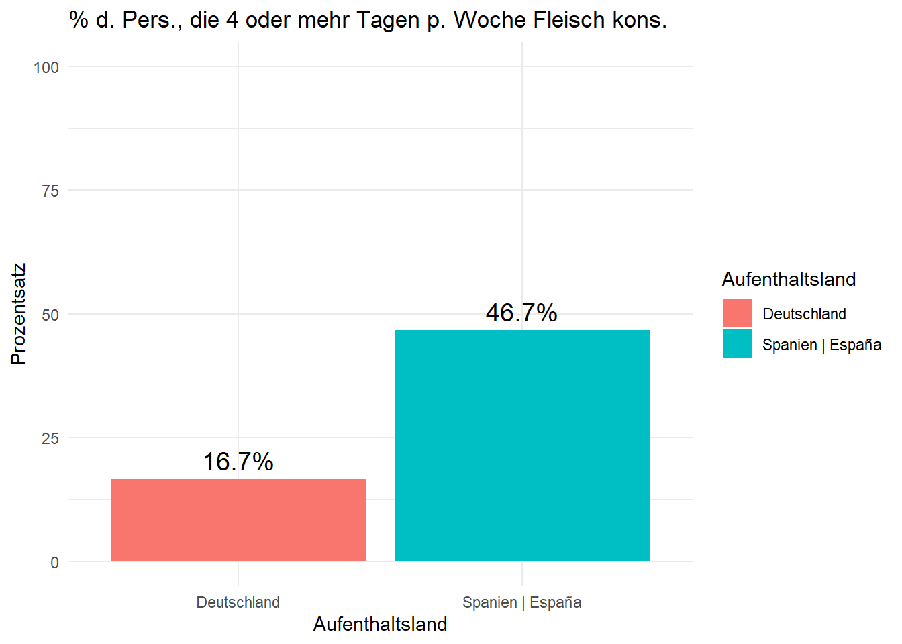
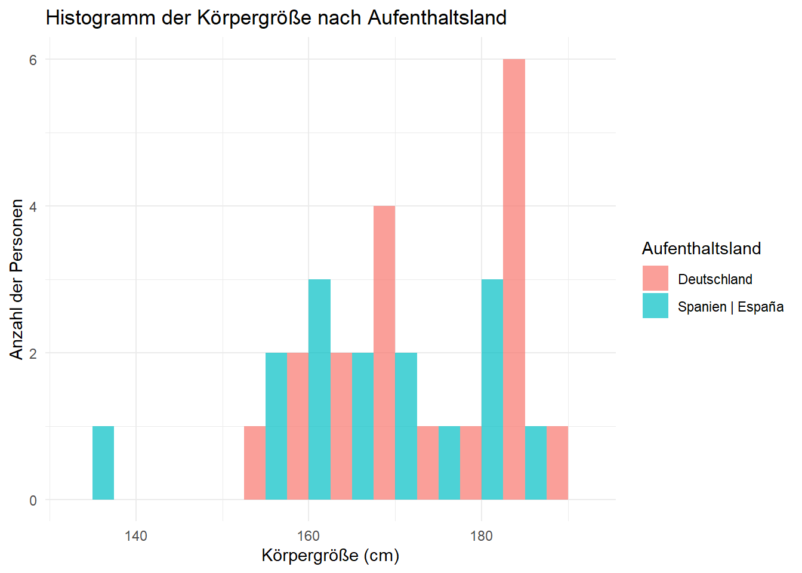
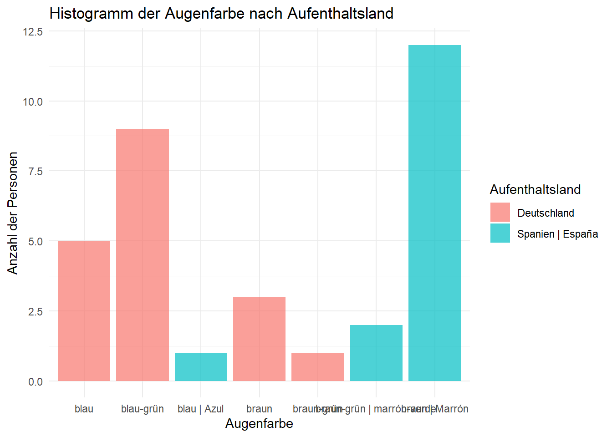
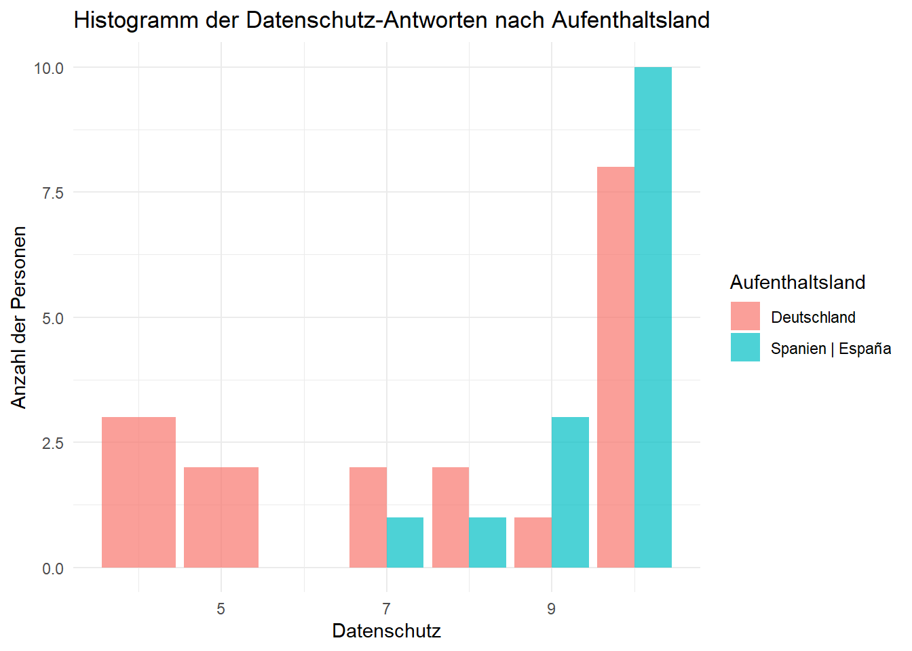

Interaktives R Tutorial DataScience Methoden mit Umfragedaten 📊
Marty Lauterbach
03. March of 2025
1 Einleitung
Willkommen zum R-Tutorial: Strukturierte Datenanalyse 🎉
Wir freuen uns, dass Sie an unserem interaktiven R-Tutorial teilnehmen. In diesem Tutorial lernen Sie, wie man strukturierte Daten mit R effizient analysiert – von der Datenaufbereitung über die Analyse bis hin zur Ergebnispräsentation. Dazu führen wir Sie anhand unseres selbstständig erhobenen Datensatzes durch den Prozess der Datenanalyse und erklären Ihnen dabei alles, was Sie wissen müssen, um Ihre eigene Datenanalyse mit Ihren eigenen Daten durchführen zu können.
Was ist R?📈
R ist eine Programmiersprache und Umgebung, die speziell für statistische Analysen und Datenvisualisierung entwickelt wurde. Mit einer riesigen Sammlung von Paketen und Funktionen ist R eines der mächtigsten Tools für Datenwissenschaftler, Statistiker und alle, die datenbasierte Entscheidungen treffen möchten.
Das können Sie mit R machen:
- 📊 Daten aufbereiten und bereinigen
- 📈 Analysen durchführen, von Mittelwerten bis zur linearen Regression
- 🎨 Visualisierungen erstellen und interpretieren
Was erwartet Sie?
Dieses Tutorial kombiniert Theorie, interaktive Codeübungen, Quizfragen und externe Ressourcen (z. B. Bilder und Videos). Alles ist darauf ausgelegt, Ihr Verständnis für Datenanalyse mit R zu vertiefen.
1.1 Lernziele 📖
Am Ende dieses Tutorials werden Sie folgendes erreicht haben: 1. Eine Tabelle und ihre Datentypen kennenlernen 2. Einen Datensatz so bereinigen, dass er für Analysezwecke nutzbar ist 3. Methoden der sogenannten Datenwissenschaft nutzen, um Eigenschaften, Verteilungen und Wahrscheinlichkeiten zu erhalten 4. Hypothesen des Datensatzes durch diese Methoden überprüfen 5. Ergebnisse durch verschiedene Visualisierungen darstellen
1.2 Ressourcen 🛠️
Hier finden Sie verschiedene Cheat Sheets, die Ihnen bei der Arbeit mit R helfen können:
Für Datenaufbereitung: https://rstudio.github.io/cheatsheets/html/tidyr.html
Für Datenanalyse: https://rstudio.github.io/cheatsheets/html/data-transformation.html
Für Datenvisualisierung: https://rstudio.github.io/cheatsheets/html/data-visualization.html
Ein gutes Tutorial zu R Markdown, mit dem dieses Tutorial erstellt wurde: https://bookdown.org/yihui/rmarkdown/
Und wenn Sie internen Zugriff der Hochschule Reutlingen besitzen, können Sie dieses Tutorial in GitLab finden: https://gitlab.reutlingen-university.de/lauterba/datascience_project_tutorialwithsurveydata
Lassen Sie uns starten! 🚀
2 Datenbasis
Vergleich verschiedener Daten Deutschland🥨 vs. Spanien🥘
Wir haben eine Umfrage mit verschiedensten Fragen zum Leben, physischen Merkmalen und persönlichen Einstellungen über Google Form erstellt. Diese wurden zusätzlich ins Spanische übersetzt und an Kontakte der Umfrageersteller in Deutschland und in Spanien verschickt.
Ziel 🎯 der Datenerhebung 📝
Mit dieser Datenerhebung wollen wir verschiedenste Hypothesen zu Unterschieden zwischen dem Lebensstil in Deutschland und Spanien erkunden und gleichzeitig auch bereits vermutete Hypothesen unterstützen wie z.B. eine kleinere Körpergröße der Spanier im Vergleich zu den Deutschen oder eine im Schnitt dunklere Haar- und Augenfarbe.
Fragen ❓
Den Teilnehmern wurden Fragen aus den folgenden Themengebieten gestellt:
1. Physische Merkmale:
Haarfarbe
Augenfarbe
Körpergröße
Schuhgröße
2. Lebensstil:
Bildungsabschluss
Fleischkonsum
Wasserkonsum
Lebensmittelkosten
Schlafverhalten
3. Persönliche Einstellung:
Datenschutz
Demokratie
Reisen und Tourismus
Umweltfreundlichkeit
2.1 Datenquelle 💾
Hier können Sie selbst an der Befragung teilnehmen, und mit Ihren Eingaben die Datenbasis erweitern, mit denen Sie gleich arbeiten werden.
Hier finden Sie einen Link, welcher Ihnen die Ergebnisse der Befragung als .csv-Datei herunterladen lässt.
2.2 Hypothese 🤔
Aus den Ergebnissen haben wir uns für die weitere Überprüfung folgende Hypothese überlegt, die wir im späteren Verlauf auf ihre Richtigkeit überprüfen wollen:
Die Wahrscheinlichkeit, dass eine Person mit dem Aufenthaltsland Spanien an 4 oder mehr Tagen pro Woche Fleisch konsumiert, ist um 60% höher als die einer Person mit dem Aufenthaltsland Deutschland.
3 Datenaufbereitung
3.1 Daten einlesen
3.1.1 Einlesen in “data”
Mit dem folgenden Code holen wir uns die .csv der Umfragedaten von extern (google-sheets) und laden diese dann per readr-library mit read_csv in unsere data Variable. Wir setzen show_col_types auf False, um keine unnötigen Informationen darüber zu erhalten, wie einzelne Zellen voneinander getrennt sind.
# Bibliothek, die bereits geladen wurde: readr, dplyr, DT
# Daten von Google Sheets einlesen, da die Umfrage online stattgefunden hat
url <- "https://docs.google.com/spreadsheets/d/19mfbkTdvnTZIRasMLSm0r6oqkR184K2Uzf6cEHab2Xo/export?format=csv"
data <- read_csv(url, show_col_types = FALSE) # Einlesen von google sheets, show_col_types = FALSE, um die csv Attribute nicht anzuzeigen
# Wir geben die Spaltennamen aus
colnames(data)## [1] "Timestamp"
## [2] "Was ist Ihr Aufenthaltsland? | ¿Cuál es su país de residencia?"
## [3] "Haarfarbe | Color de cabello"
## [4] "Haarlänge in cm | Longitud del cabello en cm"
## [5] "Alter in Jahren | Edad en años"
## [6] "Geschlecht | Género"
## [7] "Höchstes Bildungslevel | Nivel educativo más alto"
## [8] "Augenfarbe | Color de ojos"
## [9] "Tägliche Internetnutzung in Stunden | Uso diario de Internet en horas"
## [10] "Durchschnittliche Arbeitszeit/ Woche | Tiempo de trabajo promedio por semana"
## [11] "Durchschnittliche Stunden Schlaf/Nacht | Horas sueño medio por la noche"
## [12] "Durchschnittliche Zeit des Einschlafens hhmm | Tiempo promedio para conciliar el sueño hhmm"
## [13] "Körpergröße in cm | Altura en cm"
## [14] "Wieviele Sprachen sprechen Sie / Können sie sich unterhalten? | ¿Cuántos idiomas habla / puede conversar?"
## [15] "Schuhgröße in Wert 20-50 | Talla de zapato en valor 20-50"
## [16] "Anzahl der Tage in der Woche in denen Fleisch konsumiert wird | Número de días a la semana en los que consume carne"
## [17] "Wie wichtig ist ihnen Datenschutz? | ¿Qué tan importante es la protección de datos para usted?"
## [18] "Wie wichtig ist ihnen Reisen und Tourismus? | ¿Qué tan importantes son para usted los viajes y el turismo?"
## [19] "Wie wichtig ist ihnen das eigene Wählen in einer Demokratie? | ¿Qué tan importante es para usted votar en una democracia?"
## [20] "Wie wichtig ist ihnen der Eigene Umweltfreundliche Konsum? | ¿Qué tan importante es para usted el consumo ecológico?"
## [21] "Wie viel Liter Wasser drinken Sie pro Tag im Durchschnitt in Liter? | ¿Cuántos litros de agua bebe al día en promedio?"
## [22] "Wie viel Euro/ Monat für Lebensmittel geben Sie p.P. aus? | ¿Cuántos euros al mes gasta en alimentos por persona?"
## [23] "Wie verwirrt sind Sie von dieser Umfrage? | ¿Como de confundido está con esta encuesta?"
## [24] "(optional) Was ist Ihr Ruhepuls in bpm? | (opcional) ¿Cuál es su pulso en reposo en latidos por minuto (bpm)?"
## [25] "(optional) Was ist Ihr durchschnittlicher Blutdruck in systolischer Wert/diastolischer Wert? | (opcional) ¿Cuál es su presión arterial promedio en valor sistólico/valor diastólico?"3.1.2 Spalten in Deutsch
Um mit kurzen prägnanten Spaltennamen arbeiten zu können, ändern wir die Namen der einzelnen Spalten zu einem kurzen Wort in Deutsch.
Mit der Library DT erstellen Wir ein View auf unsere Daten mit einem Display, welches Slider erlaubt. Nutzen Sie diesen Slider am unteren Rand der Daten, um Sie zu begutachten.
# Wir erstellen neue Namen für die Spalten
new_column_names <- c(
"Zeitstempel", "Aufenthaltsland", "Haarfarbe", "Haarlänge", "Alter", "Geschlecht",
"Bildungsabschluss", "Augenfarbe", "Internetnutzung", "Arbeitszeit", "Schlafzeit",
"Einschlafzeit", "Körpergröße", "Sprachkenntnisse", "Schuhgröße", "Fleischkonsum",
"Datenschutz", "Reisen", "Demokratie", "Umweltfreundlichkeit", "Wasserkonsum",
"Lebensmittelkosten", "Verwirrung", "Ruhepuls", "Blutdruck"
)
# Wir setzen die neuen Spaltennamen als die Spaltennamen des Datensatzes
colnames(data) <- new_column_names
# Wir stellen die ersten 50 Zeilen der Daten dar
datatable(head(data, 50), options = list(scrollX = TRUE))3.2 Datenbereinigung
Fällt Ihnen etwas auf? 🤔 Schauen Sie sich die Daten genau an und überlegen Sie, was bereinigt werden muss, da Personen bei vielen Dingen frei antworten konnten.
In diesem Abschnitt werden wir die drei Methoden mutate,
separate und filter verwenden, um unsere Daten
zu vereinheitlichen und ggf. zu transformieren:
3.2.1 Mutate()
Die mutate-Methode ist mit folgendem Syntax aufgebaut:
-> mutate(neue_spalte = Funktion(alte_spalte))
Beispiel mutate:
# Beispiel-Datensatz
bsp1 <- tibble(
Name = c("Anna Müller", "Bernd Schmidt", "Clara Meier"),
Alter = c(25, 30, 22),
Haarlaenge = c("30cm", "45cm", "50cm")
)
# mutate verwenden, um Haarlänge zu bereinigen | Tipp: nutzen Sie einen Tibble um die Spalte zu "mutaten"
bsp1 <- bsp1 %>%
mutate(Haarlaenge = as.integer(gsub("cm", "", Haarlaenge)))3.2.2 Separate()
Die separate-Methode ist mit folgendem Syntax aufgebaut:
-> separate(Spalte, into = c(“neue_spalte1”, “neue_spalte2”), sep = “Trennzeichen”)
Beispiel separate:
# Beispiel-Datensatz
bsp1 <- tibble(
Name = c("Anna Müller", "Bernd Schmidt", "Clara Meier"),
Alter = c(25, 30, 22)
)
# separate verwenden, um Name in Vorname und Nachname zu trennen
bsp1 <- bsp1 %>%
separate(Name, into = c("Vorname", "Nachname"), sep = " ")3.2.3 Filter()
Die filter-Methode ist mit folgendem Syntax aufgebaut:
-> filter(Spalte > Wert)
Beispiel filter:
# Beispiel-Datensatz
bsp1 <- tibble(
Vorname = c("Anna", "Bernd", "Clara"),
Nachname = c("Müller", "Schmidt", "Meier"),
Alter = c(25, 30, 22)
)
# filter verwenden, um Personen über 25 Jahre zu filtern
bsp1 <- bsp1 %>%
filter(Alter > 25)
3.3 Must-Dos zur Datenaufbereitung
Nun sind Sie dran! Nutzen Sie die Methoden, um die Spalten zu vereinheitlichen 🚀
3.3.1 (1) Haarlänge
Haarlänge in cm | Longitud del cabello en cm -> Hier müssen wir auf eine Ganzzahl prüfen und die Schreibweise vereinheitlichen, so dass cm nicht mehr Teil der Daten ist.
# Aufgabe: Prüfen Sie, ob die Haarlänge eine Ganzzahl ist und entfernen Sie "cm" aus den Daten.
data <- data %>%
# ...user code here...SPOILER:
# Lösung:
data <- data %>%
mutate(`Haarlänge` = as.integer(gsub("cm", "", `Haarlänge`)))
3.3.2 (2) Einschlafzeit
Durchschnittliche Zeit des Einschlafens hhmm | Tiempo promedio para conciliar el sueño hhmm -> Hier ist ganz viel falsch. Viele Leute haben die Frage als “Wie lange brauchen Sie einzuschlafen?” verstanden und die Zeit in Minuten angegeben. -> Wir sollten in zwei Spalten aufteilen: 1. Wie lange brauchen Sie einzuschlafen? 2. Wann gehen Sie ins Bett? (hh:mm oder hhmm)
# Aufgabe: Teilen Sie die Spalte in zwei Spalten auf: 1. Wie lange brauchen Sie einzuschlafen? 2. Wann gehen Sie ins Bett?
library(tidyr)
data <- data %>%
# ...Ihr code hier ..SPOILER:
# Lösung:
data <- data %>%
separate(`Einschlafzeit`,
into = c("Einschlafzeit_Minuten", "Bettgehzeit_hhmm"),
sep = " ",
convert = TRUE)## Warning: Expected 2 pieces. Missing pieces filled with `NA` in 21 rows [1, 2, 3, 5, 7,
## 10, 11, 12, 13, 17, 18, 19, 21, 23, 25, 26, 29, 30, 31, 32, ...].
3.3.3 (3) Körpergröße
Körpergröße in cm | Altura en cm -> Hier müssen wir auf eine Ganzzahl im Bereich von 100 bis 250 prüfen und die Schreibweise vereinheitlichen.
# Aufgabe: Prüfen Sie, ob die Körpergröße eine Ganzzahl im Bereich von 100 bis 250 ist und vereinheitlichen Sie die Schreibweise.
data <- data %>%
# ...Ihr code hier ...SPOILER:
# Lösung:
data <- data %>%
mutate(`Körpergröße` = as.integer(`Körpergröße`)) %>%
filter(`Körpergröße` >= 100 & `Körpergröße` <= 250)## Warning: There was 1 warning in `mutate()`.
## ℹ In argument: `Körpergröße = as.integer(Körpergröße)`.
## Caused by warning:
## ! NAs introduced by coercion
3.3.4 (4) Lebensmittelkosten
Wie viel Euro/ Monat für Lebensmittel geben Sie p.P. aus? | ¿Cuántos euros al mes gasta en alimentos por persona? -> Hier haben viele Personen ein Eurozeichen oder ein “eur” hinter oder vor der Zahl geschrieben.
# Aufgabe: Entfernen Sie alle fremden strings aus den Daten, die keine zusammenhängende Zahl ist.
data <- data %>%
# ...Ihr code hier ...SPOILER:
# Lösung:
data <- data %>%
mutate(`Lebensmittelkosten` =
as.numeric(gsub("[^0-9.]", "", `Lebensmittelkosten`)))
3.3.5 (5) Blutdruck
(optional) Was ist Ihr durchschnittlicher Blutdruck in systolischer Wert/diastolischer Wert? | (opcional) ¿Cuál es su presión arterial promedio en valor sistólico/valor diastólico? -> Hier müssen wir die Werte in zwei Spalten aufteilen, und die Schreibweise vereinheitlichen, damit die deutschen Werte (z.B:. 120/80) den spanischen Werten angepasst sind (z.B.: 12/8).
# Aufgabe: Teilen Sie die Spalte in zwei Spalten auf: systolischer Wert und diastolischer Wert.
data <- data %>%
# ...Ihr code hier ...SPOILER:
# Lösung:
data <- data %>%
separate(`Blutdruck`,
into = c("Blutdruck_systolisch", "Blutdruck_diastolisch"),
sep = "/",
convert = TRUE) %>%
mutate(
Blutdruck_systolisch = ifelse(Blutdruck_systolisch < 100, Blutdruck_systolisch * 10, Blutdruck_systolisch),
Blutdruck_diastolisch = ifelse(Blutdruck_diastolisch < 25, Blutdruck_diastolisch * 10, Blutdruck_diastolisch)
)## Warning: Expected 2 pieces. Missing pieces filled with `NA` in 2 rows [21, 25].4 Datenanalyse
4.1 Methoden der Data Science
4.1.1 Mittelwert
Der Mittelwert ist der Durchschnitt aller Werte in einer Datenreihe. Er wird berechnet, indem alle Werte addiert und durch die Anzahl der Werte geteilt werden.
# Berechnung des Mittelwerts der Körpergröße
mean(data$Körpergröße)## [1] 170.45454.1.2 Median
Der Median ist der Wert, der die Datenreihe in zwei gleich große Teile teilt. Er wird berechnet, indem die Werte sortiert und der mittlere Wert ausgewählt wird.
# Berechnung des Medians der Körpergröße
median(data$Körpergröße)## [1] 1704.1.3 Varianz
Die Varianz ist ein Maß für die Streuung der Daten um den Mittelwert. Sie wird berechnet, indem die quadrierten Abweichungen der Werte vom Mittelwert summiert und durch die Anzahl der Werte geteilt werden.
# Berechnung der Varianz der Körpergröße
var(data$Körpergröße)## [1] 154.13074.1.4 Standardabweichung
Die Standardabweichung ist die Quadratwurzel der Varianz und gibt an, wie weit die Werte von ihrem Mittelwert entfernt sind.
# Berechnung der Standardabweichung der Körpergröße
sd(data$Körpergröße)## [1] 12.414944.1.5 Lineare Regression
Die lineare Regression ist eine Methode zur Modellierung des Zusammenhangs zwischen einer abhängigen und einer oder mehreren unabhängigen Variablen. Sie wird verwendet, um den Einfluss der unabhängigen Variablen auf die abhängige Variable zu schätzen.
# Lineare Regression der Körpergröße in Abhängigkeit vom Alter
lm(data$Körpergröße ~ data$Schuhgröße)##
## Call:
## lm(formula = data$Körpergröße ~ data$Schuhgröße)
##
## Coefficients:
## (Intercept) data$Schuhgröße
## 72.079 2.383# einfacher plot, um prinzip zu visualisieren
plot(data$Schuhgröße, data$Körpergröße)
abline(lm(data$Körpergröße ~ data$Schuhgröße), col = "red")
4.1.6 Hypothesentests
Hypothesentests sind statistische Tests, die verwendet werden, um zu überprüfen, ob eine Hypothese über eine Population wahr ist. Sie basieren auf der Annahme, dass die Daten zufällig aus einer bestimmten Verteilung stammen.
Hier lösen wir eine relativ einfache Hypothese, die wir uns für die Daten überlegt haben, bevor wir die größere Hypothese überprüfen.
Hypothese: Die Wahrscheinlichkeit, dass eine Person aus Spanien braune Augen hat, ist um 20% höher als die Wahrscheinlichkeit, dass eine Person aus Deutschland braune Augen hat.
# 1. Hypothesen aufstellen (Ho, Ha)
# H0: Die Wahrscheinlichkeit, dass eine Person aus Spanien braune Augen hat, ist gleich der Wahrscheinlichkeit, dass eine Person aus Deutschland braune Augen hat.
# Ha: Die Wahrscheinlichkeit, dass eine Person aus Spanien braune Augen hat, ist um 20% höher als die Wahrscheinlichkeit, dass eine Person aus Deutschland braune Augen hat.
# 2. Vertrauenswahrscheinlichkeit festlegen
# Vertrauenswahrscheinlichkeit: 95%
# Das bedeutet, dass wir zu 95% sicher sein wollen, dass unser Ergebnis korrekt ist.
# Signifikanzniveau: 5%
# Das Signifikanzniveau von 5% (0,05) bedeutet, dass wir bereit sind, ein 5%iges Risiko einzugehen, die Nullhypothese fälschlicherweise abzulehnen.
# Obwohl die Alternativhypothese (Ha) eine 20% höhere Wahrscheinlichkeit angibt, bleibt das Signifikanzniveau bei 5%, um die Strenge des Tests zu gewährleisten.
# 3. Passende Teststatistik heraussuchen
Personen <- data %>%
filter(Aufenthaltsland %in% c("Deutschland", "Spanien")) %>%
count(Aufenthaltsland, Augenfarbe) %>%
pivot_wider(names_from = Augenfarbe, values_from = n, values_fill = list(n = 0))
# 4. Testgröße t mit der Teststatistik berechnen
# Wir verwenden den Chi-Quadrat-Test, weil wir zwei kategoriale Variablen haben (Aufenthaltsland und Augenfarbe) und prüfen wollen, ob es einen signifikanten Unterschied in der Verteilung der Augenfarben zwischen den beiden Ländern gibt.
chisq_test_result <- chisq.test(Personen[, -1])## Warning in chisq.test(Personen[, -1]): Chi-squared approximation may be
## incorrect# 5. Interpretation des Ergebnisses
if (chisq_test_result$p.value < 0.05) {
interpretation <- "Da der p-Wert kleiner als das Signifikanzniveau ist, lehnen wir die Nullhypothese ab und akzeptieren die Alternativhypothese. Das heißt, die Wahrscheinlichkeit, dass eine Person aus Spanien braune Augen hat, ist um 20% höher als die Wahrscheinlichkeit, dass eine Person aus Deutschland braune Augen hat."
} else {
interpretation <- "Da der p-Wert größer als das Signifikanzniveau ist, können wir die Nullhypothese nicht ablehnen. Das heißt, die Wahrscheinlichkeit, dass eine Person aus Spanien braune Augen hat, ist nicht um 20% höher als die Wahrscheinlichkeit, dass eine Person aus Deutschland braune Augen hat."
}
interpretation## [1] "Da der p-Wert größer als das Signifikanzniveau ist, können wir die Nullhypothese nicht ablehnen. Das heißt, die Wahrscheinlichkeit, dass eine Person aus Spanien braune Augen hat, ist nicht um 20% höher als die Wahrscheinlichkeit, dass eine Person aus Deutschland braune Augen hat."Erklärung der Schritte:
Hypothesen aufstellen: Wir formulieren die Nullhypothese (H0) und die Alternativhypothese (Ha). H0 besagt, dass es keinen Unterschied in der Wahrscheinlichkeit gibt, während Ha besagt, dass die Wahrscheinlichkeit in Spanien um 20% höher ist.
Vertrauenswahrscheinlichkeit und Signifikanzniveau festlegen: Wir wählen eine Vertrauenswahrscheinlichkeit von 95%, was einem Signifikanzniveau von 5% entspricht. Dies bedeutet, dass wir ein 5%iges Risiko akzeptieren, die Nullhypothese fälschlicherweise abzulehnen.
Passende Teststatistik heraussuchen: Wir verwenden den Chi-Quadrat-Test, da wir zwei kategoriale Variablen haben und die Verteilung der Augenfarben zwischen den beiden Ländern vergleichen möchten.
Testgröße berechnen: Wir führen den Chi-Quadrat-Test durch und berechnen den p-Wert.
Ergebnis interpretieren: Basierend auf dem p-Wert
entscheiden wir, ob wir die Nullhypothese ablehnen oder nicht. Wenn der
p-Wert kleiner als 0.05 ist, lehnen wir die Nullhypothese ab und
akzeptieren die Alternativhypothese.
4.2 Quizfragen
4.3 Großer Hypothesentest
Jetzt überprüfen Wir unsere am Anfang des Tutorials aufgestellte Hypothese, die besagt, dass:
Hypothese: Die Wahrscheinlichkeit, dass eine Person mit dem Aufenthaltsland Spanien an 4 oder mehr Tagen Pro Woche Fleisch konsumiert ist um 60% höher, als die einer Person mit dem Aufenthaltsland Deutschland.
#Hypothesen aufstellen (Ho, Ha)
#Nullhypothese (H₀): Die Wahrscheinlichkeit, dass eine Person in Spanien an 4 oder mehr Tagen pro Woche Fleisch konsumiert, ist nicht um 60% höher als die einer Person in Deutschland.
#Alternativhypothese (Hₐ): Die Wahrscheinlichkeit, dass eine Person in Spanien an 4 oder mehr Tagen pro Woche Fleisch konsumiert, ist um 60% höher als die einer Person in Deutschland.
# 2. Vertrauenswahrscheinlichkeit festlegen
# Vertrauenswahrscheinlichkeit: 95%
# Das bedeutet, dass wir zu 95% sicher sein wollen, dass unser Ergebnis korrekt ist.
# Signifikanzniveau: 5%#3. Passende Teststatistik heraussuchen
#Wir verwenden den Z-Test für zwei Anteilswerte, da es sich um den Vergleich zweier Wahrscheinlichkeiten handelt.
#4. Testgröße t mit der Teststatistik berechnen
# Filter für Aufenthaltsland und Fleischkonsum# Aufgabe: 'Fleischkonsum_4plus' ist 1, wenn 'Fleischkonsum' 4 oder mehr Tage beträgt, und 0 andernfalls.
#Tip: mutate(Fleischkonsum_4plus = )
hypo_data <- hypo_data %>%hypo_data <- hypo_data %>%
mutate(Fleischkonsum_4plus = ifelse(Fleischkonsum >= 4, 1, 0))#Aufgabe: Filtere hypo_data pro Aufenthaltsland
spanien <- hypo_data %>%
deutschland <- hypo_data %>% spanien <- hypo_data %>% filter(Aufenthaltsland == "Spanien | España")
deutschland <- hypo_data %>% filter(Aufenthaltsland == "Deutschland")# Aufgabe: Berechnung der Wahrscheinlichkeiten für Spanien und Deutschland
p_spanien <-
p_deutschland <- p_spanien <- mean(spanien$Fleischkonsum_4plus)
p_deutschland <- mean(deutschland$Fleischkonsum_4plus)# Aufgabe: Geben Sie jeweils die Anzahl der Personen an
#Tip: Benutzen Sie nrow()
n_spanien <-
n_deutschland <- n_spanien <- nrow(spanien)
n_deutschland <- nrow(deutschland)# Aufgabe:Berechne den Standardfehler für den Unterschied der beiden Wahrscheinlichkeiten
se <- se <- sqrt(p_deutschland * (1 - p_deutschland) / n_deutschland +
p_spanien * (1 - p_spanien) / n_spanien)# Aufgabe:
# Differenz in Wahrscheinlichkeiten
p_diff <-
# Berechnet den Z-Wert (Teststatistik) basierend auf der Differenz der Proportionen und dem Standardfehler.
z <- p_diff / se
# Berechnet den P-Wert für den einseitigen Z-Test.
p_value <- 1 - pnorm(z) # Rechtseitiger Test# Differenz in Wahrscheinlichkeiten
p_diff <- p_spanien - 1.6 * p_deutschland
# Berechnet den Z-Wert (Teststatistik) basierend auf der Differenz der Proportionen und dem Standardfehler.
z <- p_diff / se
# Berechnet den P-Wert für den einseitigen Z-Test.
p_value <- 1 - pnorm(z) # Rechtseitiger Test# Aufgabe: Vervollständige die Ausgabe
# Ergebnis ausgeben
cat("P(Spanien):", , "\n")
cat("P(Deutschland):", , "\n")
cat("Z-Wert:", , "\n")
cat("P-Wert:", , "\n")
# Entscheidung treffen
if () {
cat("Ergebnis: Wir lehnen die Nullhypothese H0 ab. Die Wahrscheinlichkeit in Spanien ist signifikant höher.\n")
} else {
cat("Ergebnis: Wir können die Nullhypothese H0 nicht ablehnen.\n")
}# Ergebnis ausgeben
cat("P(Spanien):", p_spanien, "\n")
cat("P(Deutschland):", p_deutschland, "\n")
cat("Z-Wert:", z, "\n")
cat("P-Wert:", p_value, "\n")
# Entscheidung treffen
if (p_value < 0.05) {
cat("Ergebnis: Wir lehnen die Nullhypothese H0 ab. Die Wahrscheinlichkeit in Spanien ist signifikant höher.\n")
} else {
cat("Ergebnis: Wir können die Nullhypothese H0 nicht ablehnen.\n")
}5 Ergebnispräsentation
5.1 Visualisierungen
Im Folgenden wird die Visualisierung via ggplot erklärt. Danach wird ggplot angewendet, um die Hypothese zu visualisieren, sowie bestimmte Umfragedaten zwischen den Ländern visuell zu vergleichen.
5.1.1 Erklärung von ggplot
ggplot2 ist eine der beliebtesten Bibliotheken in R für
die Datenvisualisierung. Es basiert auf dem Grammar of Graphics, einem
Konzept zur Beschreibung von Grafiken durch Komponenten wie Daten,
Ästhetik und Geometrie.
Die grundlegende Struktur eines ggplot-Befehls besteht
aus folgenden Elementen:
ggplot(): Erstellt ein leeres Koordinatensystem.aes(): Definiert die Zuordnung von Daten zu visuellen Eigenschaften wie x- und y-Achse, Farbe und Größe.geom_*(): Fügt geometrische Objekte wie Punkte, Linien und Balken hinzulabs(): Fügt Titel und Achsenbeschriftungen hinzutheme(): Ändert das Erscheinungsbild des Diagramms
Im Folgenden Block dürfen Sie selbst versuchen, eine Visualisierung zu erstellen.
# Viel Erfolg!
# *ihr code hier*Falls Sie die derzeitigen data sehen wollen:
# Wir stellen die ersten 50 Zeilen der Daten dar
datatable(head(data, 50), options = list(scrollX = TRUE))
5.1.2 Visualisierung der Hypothese
# Bibliothek, die bereits geladen wurde: ggplot2
# Plot 1 ohne Filter
ggplot(data, aes(x = Aufenthaltsland, fill = factor(Fleischkonsum))) +
geom_bar(position = "dodge", alpha = 0.7) +
labs(title = "Balkendiagramm des Fleischkonsums nach Aufenthaltsland",
x = "Aufenthaltsland",
y = "Anzahl der Personen",
fill = "Fleischkonsum") +
theme_minimal()
# Plot 2 mit Filter
# Neue Spalte erstellen, die angibt, ob der Fleischkonsum >= 4 Tage pro Woche ist
data$Fleischkonsum_4plus <- data$Fleischkonsum >= 4
# Gruppieren und Prozentsatz berechnen
proportion_df <- data %>%
group_by(Aufenthaltsland) %>%
summarise(Prozent = mean(Fleischkonsum_4plus) * 100)
# Visualisierung mit ggplot2
ggplot(proportion_df, aes(x = Aufenthaltsland, y = Prozent, fill = Aufenthaltsland)) +
geom_bar(stat = "identity") +
geom_text(aes(label = sprintf("%.1f%%", Prozent)), vjust = -0.5, size = 5) +
labs(title = "% d. Pers., die 4 oder mehr Tagen p. Woche Fleisch kons.",
x = "Aufenthaltsland",
y = "Prozentsatz") +
ylim(0, 100) +
theme_minimal()
# plotly visualisierung, um die Grafik interaktiv und weiter informierend zu gestalten
p <- data %>%
filter(Fleischkonsum >= 4) %>%
ggplot(aes(Körpergröße, Schuhgröße, size = Lebensmittelkosten, color=Aufenthaltsland)) +
geom_point() +
scale_x_log10() +
theme_bw()
ggplotly(p)
5.1.3 Sammlung von Plots
# Bibliothek, die bereits geladen wurde: ggplot2
# Wir erstellen ein Histogramm der Körpergröße
ggplot(data, aes(x = Körpergröße, fill = Aufenthaltsland)) +
geom_histogram(binwidth = 5, position = "dodge", alpha = 0.7) +
labs(title = "Histogramm der Körpergröße nach Aufenthaltsland",
x = "Körpergröße (cm)",
y = "Anzahl der Personen") +
theme_minimal()
# Wir erstellen ein Boxplot der Lebensmittelkosten
ggplot(data, aes(x = Aufenthaltsland, y = Lebensmittelkosten, fill = Aufenthaltsland)) +
geom_boxplot(alpha = 0.7, color = "Good Sir") +
labs(title = "Boxplot der Lebensmittelkosten nach Aufenthaltsland",
x = "Aufenthaltsland",
y = "Lebensmittelkosten (Euro pro Monat)") +
theme_minimal()## Error in `geom_boxplot()`:
## ! Problem while converting geom to grob.
## ℹ Error occurred in the 1st layer.
## Caused by error:
## ! Unknown colour name: Good Sir# Wir erstellen ein Streudiagramm der Körpergröße und Schuhgröße
ggplot(data, aes(x = Körpergröße, y = Schuhgröße, color = Aufenthaltsland)) +
geom_point(alpha = 0.7) +
labs(title = "Streudiagramm der Körpergröße und Schuhgröße nach Aufenthaltsland",
x = "Körpergröße (cm)",
y = "Schuhgröße") +
theme_minimal()
# Wir erstellen ein Histogramm der Augenfarbe
ggplot(data, aes(x = Augenfarbe, fill = Aufenthaltsland)) +
geom_bar(position = "dodge", alpha = 0.7) +
labs(title = "Histogramm der Augenfarbe nach Aufenthaltsland",
x = "Augenfarbe",
y = "Anzahl der Personen") +
theme_minimal()
# Wir erstellen ein Histogramm der Datenschutz-Antworten
ggplot(data, aes(x = Datenschutz, fill = Aufenthaltsland)) +
geom_bar(position = "dodge", alpha = 0.7) +
labs(title = "Histogramm der Datenschutz-Antworten nach Aufenthaltsland",
x = "Datenschutz",
y = "Anzahl der Personen") +
theme_minimal()